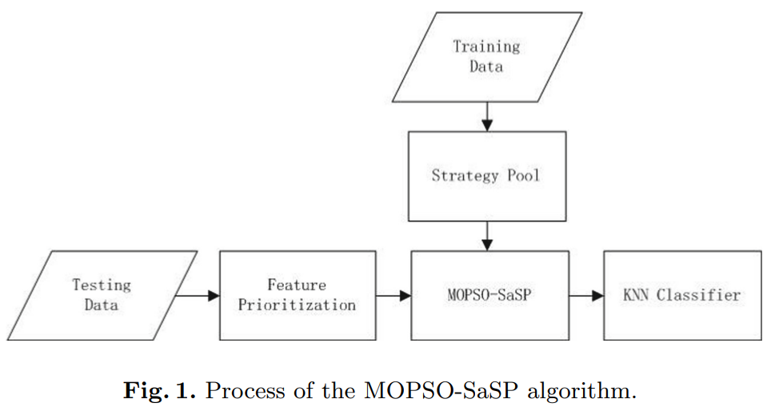
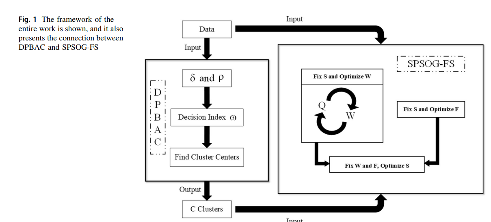
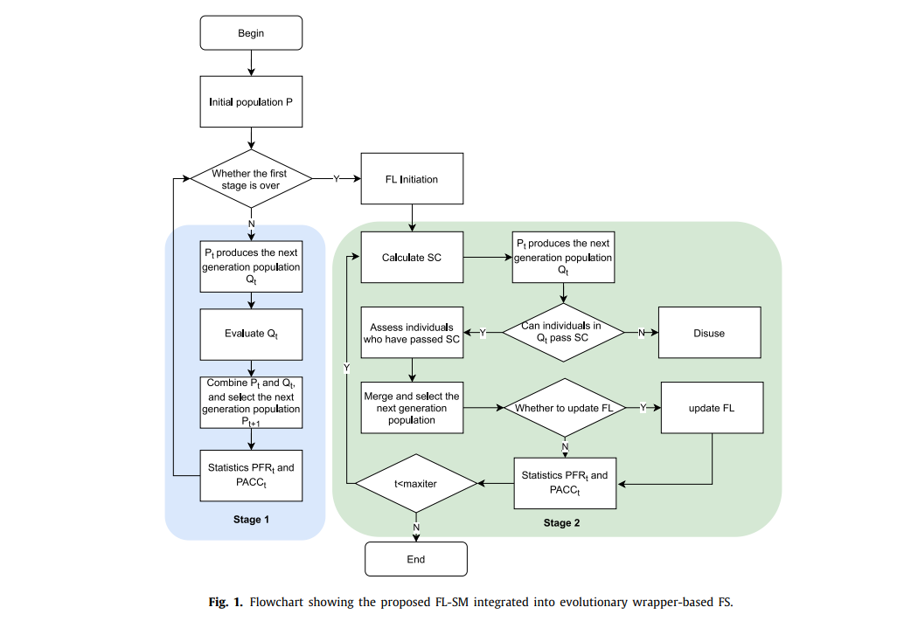
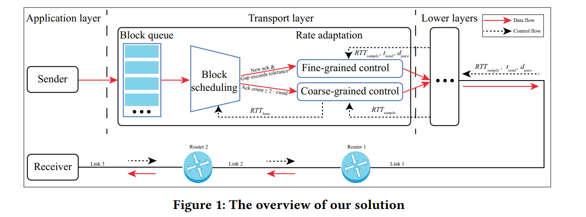
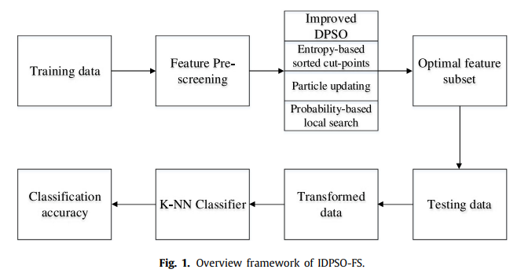
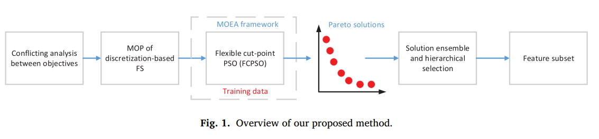
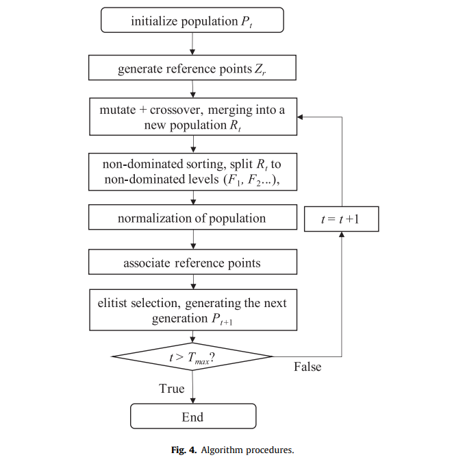
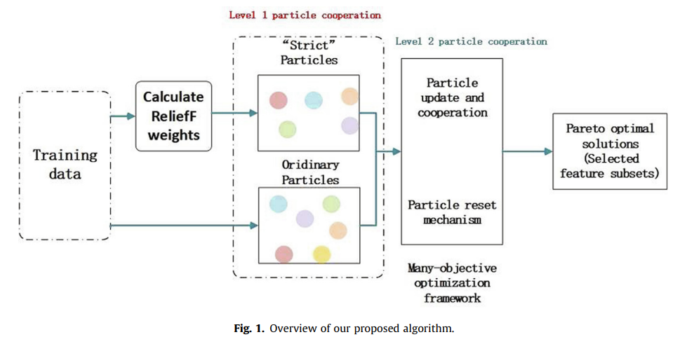
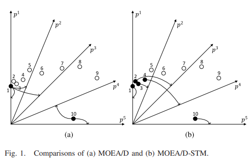
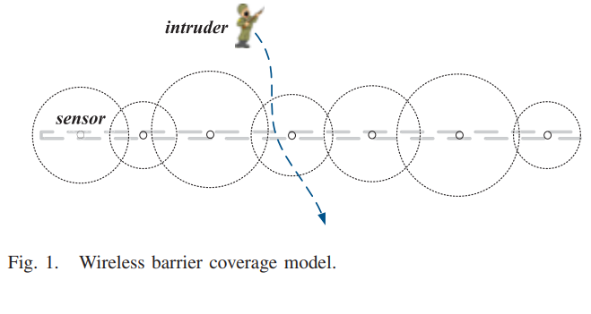

进化机器学习
进化机器学习是人工智能的一个子领域，它结合了进化算法和机器学习的原理。它旨在通过模仿自然进化过程来创建智能系统。在进化机器学习中，候选解决方案群体通过选择、交叉和突变等过程，经过多代进化。这种迭代过程可使系统随着时间的推移不断适应并提高性能。通过利用进化的力量，进化机器学习可以解决复杂的优化和学习问题，使其适用于数据挖掘、机器人和优化等领域的各种应用。
|  | Feature Selection for High-Dimensional Data Based on a Multi-objective Particle Swarm Optimization with Self-adjusting Strategy Pool.Details and code-> |
|  | Self-expressiveness property-induced structured optimal graph for unsupervised feature selection.Details and code-> |
|  | Self-expressiveness property-induced structured optimal graph for unsupervised feature selection.Details and code-> |
|  | Region Purity-based Local Feature Selection: A Multi-Objective Perspective.Details and code-> |
|  | Feature subset selection via an improved discretization-based particle swarm optimization.Details and code-> |
|  | An evolutionary multi-objective optimization framework of discretization-based feature selection for classification.Details and code-> |
|  | A problem-specific non-dominated sorting genetic algorithmfor supervised feature selection.Details and code-> |
|  | Many-objective optimization of feature selection based on two-level particle cooperation.Details and code-> |
|  | Matching-Based Selection With Incomplete Lists for Decomposition Multiobjective Optimization.Details and code-> |
|  | Problem Specific MOEA/D for Barrier Coverage with Wireless Sensors.Details and code-> |